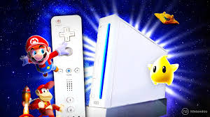
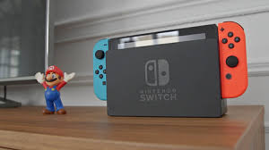
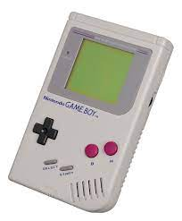
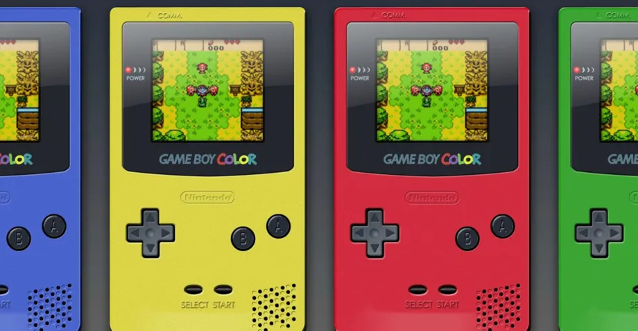
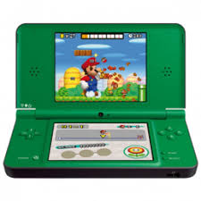
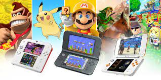

La primera consola de sobremesa de Nintendo fue la WII que fue una revolucion para la epoca. Esta consola usaba y detectaba el movimiento de los controladores del jugador para jugar a sus juegos y permitia jugar haciendo deporte fue lanzada en noviembre de 2006.
La segunda y ultima consola de sobremesa consola de Nintendo fue la Nintendo Switch y fue lanzada en marzo de 2017. Esta consola fue revolucionaria porque era muy potente y es una consola de mesa y portatil al mismo tiempo.
La primera consola portatil de Nintendo fue la GameBoy que es una consola que usaba juegos que estaban programados en bits algo que fue revolucionario esta consola era ligera e iba a pilas y salio a la luz en abril de 1989.
La GameBoy Color fue la segunda consola portatil de Nintendo y a diferencia de la anterior su pantalla proyectaba colores cosa que fue un gran avznce. Esta consola salio a la luz en octubre de 1998.
La Nintendo DS fue una revolucion para las consolas portatiles, esta consola iba con bateria en lugar de pilas y disponia de dos pantallas, una de ellas tactil. Esta consola se lanzo en marzo de 2005.
La Nintendo 3DS fue una consola portatil revolucionaria ya que incluia yoisticks y una pantalla 3D. Esta consola salio a la luz en marzo del 2011.
La PS Vita fue la segunda y ultima consola portatil de Sony debiso a que fue un fracaso en ventas y repercusion. Esta consola salio a la luz en diciembre de 2011.
